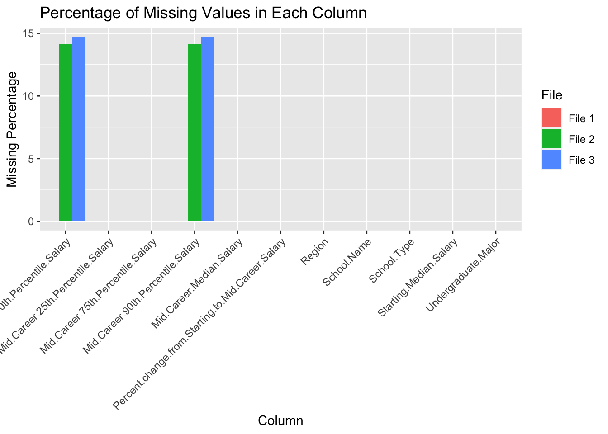

Code
library(tidyverse)── Attaching core tidyverse packages ──────────────────────── tidyverse 2.0.0 ──
✔ dplyr 1.1.3 ✔ readr 2.1.4
✔ forcats 1.0.0 ✔ stringr 1.5.0
✔ ggplot2 3.4.3 ✔ tibble 3.2.1
✔ lubridate 1.9.3 ✔ tidyr 1.3.0
✔ purrr 1.0.2
── Conflicts ────────────────────────────────────────── tidyverse_conflicts() ──
✖ dplyr::filter() masks stats::filter()
✖ dplyr::lag() masks stats::lag()
ℹ Use the conflicted package (<http://conflicted.r-lib.org/>) to force all conflicts to become errorsCode
file1 <- read.csv("data/degrees-that-pay-back.csv")
file2 <- read.csv("data/salaries-by-college-type.csv")
file3 <- read.csv("data/salaries-by-region.csv")
# Assuming your data frame is named df
# Replace "N/A" with NA in the entire data frame
file1 <- file1 %>% mutate_all(~ ifelse(. == "N/A", NA, .))
file2 <- file2 %>% mutate_all(~ ifelse(. == "N/A", NA, .))
file3 <- file3 %>% mutate_all(~ ifelse(. == "N/A", NA, .))
missing_percentage_file1 <- colMeans(is.na(file1)) * 100
missing_percentage_file2 <- colMeans(is.na(file2)) * 100
missing_percentage_file3 <- colMeans(is.na(file3)) * 100
df_file1 <- data.frame(Column = names(file1), Missing_Percentage = missing_percentage_file1)
df_file2 <- data.frame(Column = names(file2), Missing_Percentage = missing_percentage_file2)
df_file3 <- data.frame(Column = names(file3), Missing_Percentage = missing_percentage_file3)
combined_df <- bind_rows(
mutate(df_file1, File = "File 1"),
mutate(df_file2, File = "File 2"),
mutate(df_file3, File = "File 3")
)
ggplot(combined_df, aes(x = Column, y = Missing_Percentage, fill = File)) +
geom_bar(stat = "identity", position = "dodge") +
labs(title = "Percentage of Missing Values in Each Column",
x = "Column",
y = "Missing Percentage") +
theme(axis.text.x = element_text(angle = 45, hjust = 1))